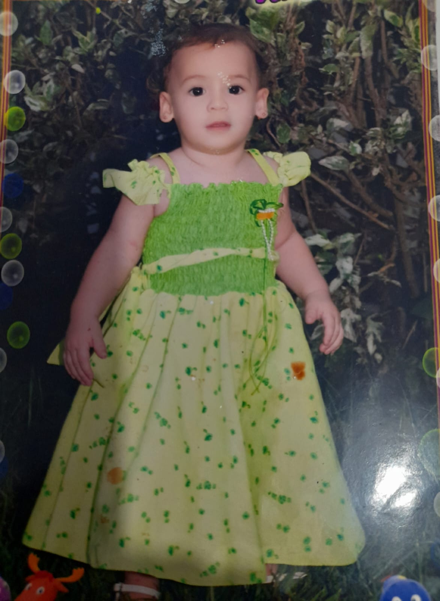
Pequeña
Cuando estabas chitita
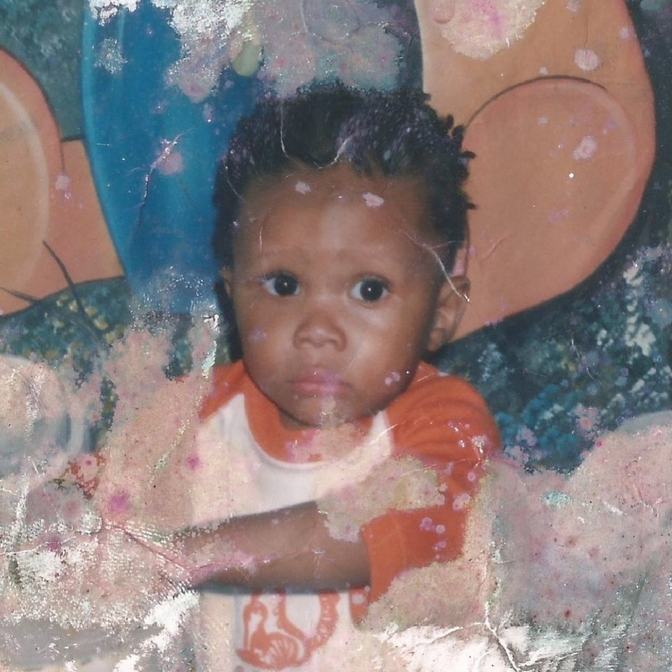
Pequeño
Cuando estaba chitito
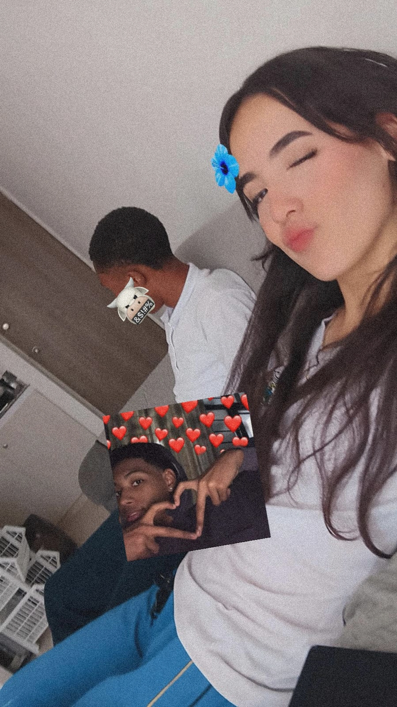
Primera foto juntos
Y la primera vez que fui a tu casa, si no estoy mal.
Videito Juntos
¡Te Amo Muchoteeee!
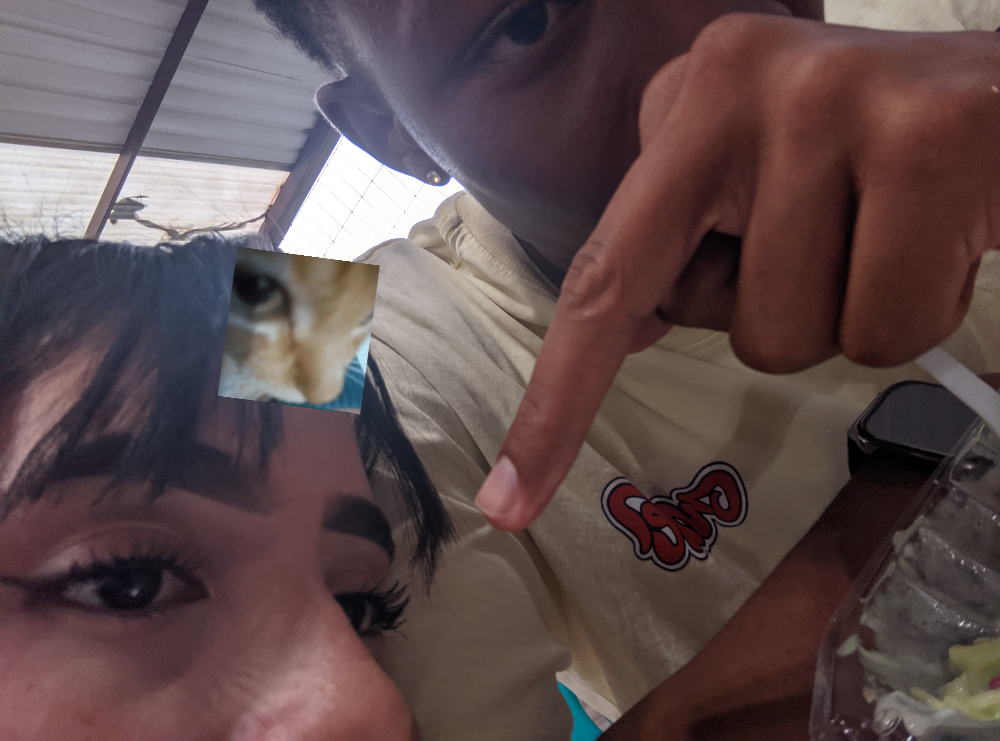
JAJAJAJAJ
Fotico
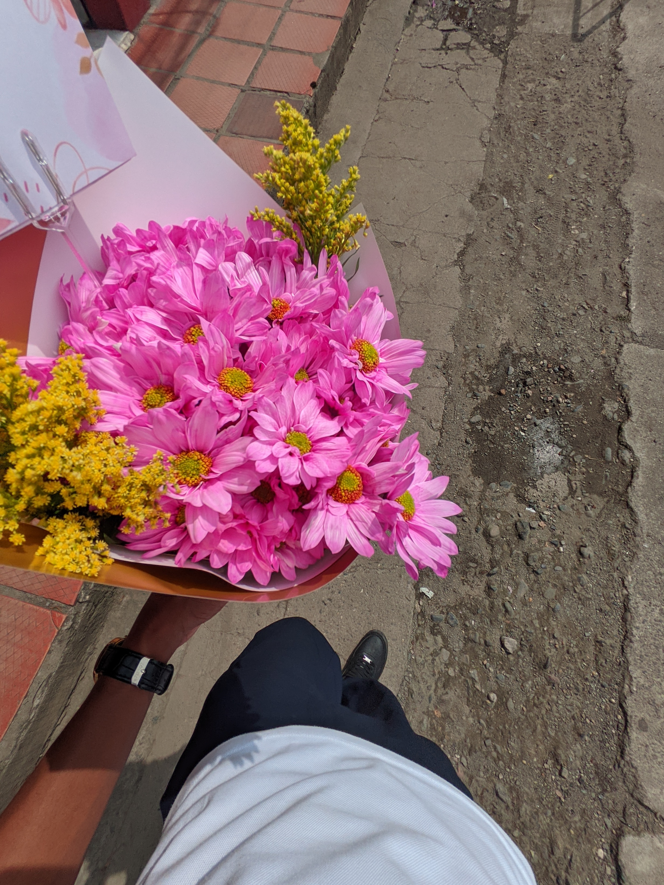
Las primeras flores
Las primeras flores que te dí
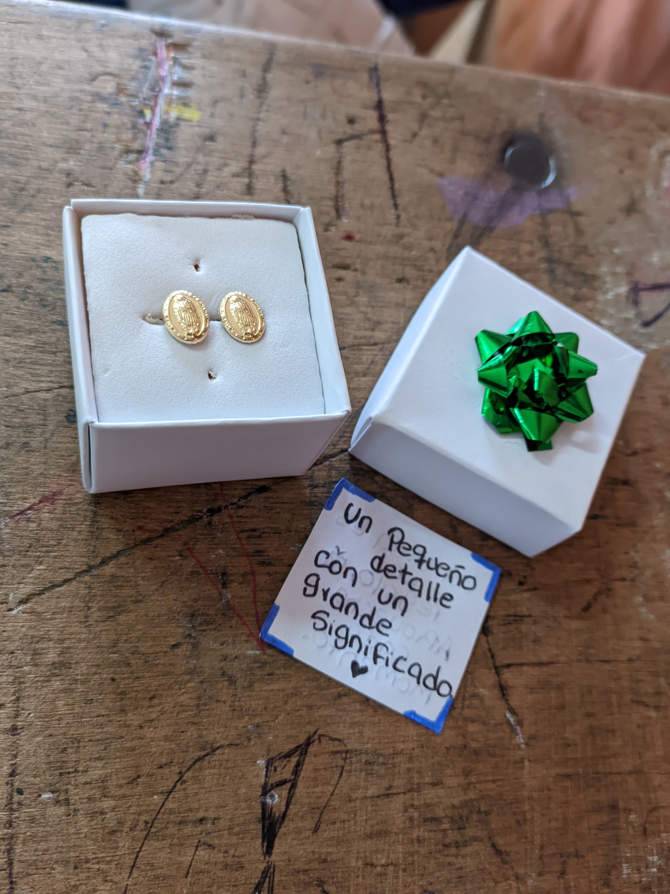
Un regalo bonito
Un regalo que me diste, todavia los uso.

Un Picnic improvisado
Un momento chevere que tuvimos.

Foto comiendo
Ese dia estaba todo maluco JAJSJAJ y aun asi salimos a comer algo.
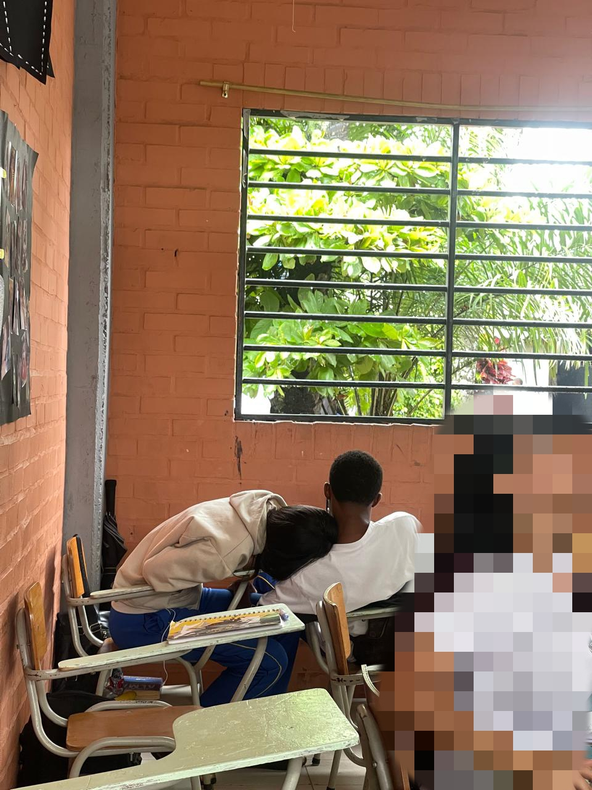
Otra foto juntos
Una foto que nos tomaron sin darnos cuenta, el tiempo pasa rapido..

Piscina
Noche de piscina.. (noh, mirame mi pelo todo bajito)
Otro video
Este fue en la fiesta de Valeria.
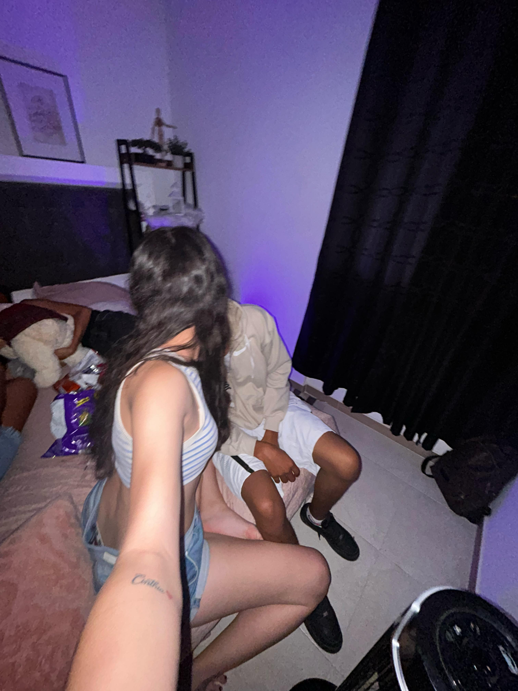
Fotico
...
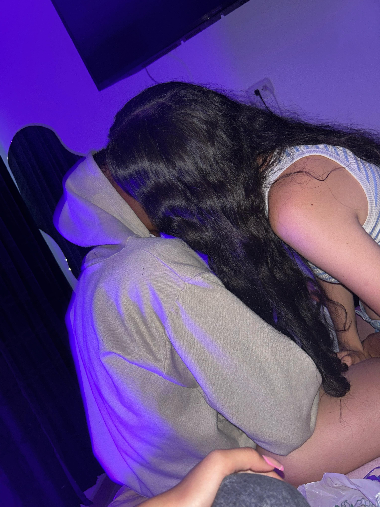
Otra fotico
...
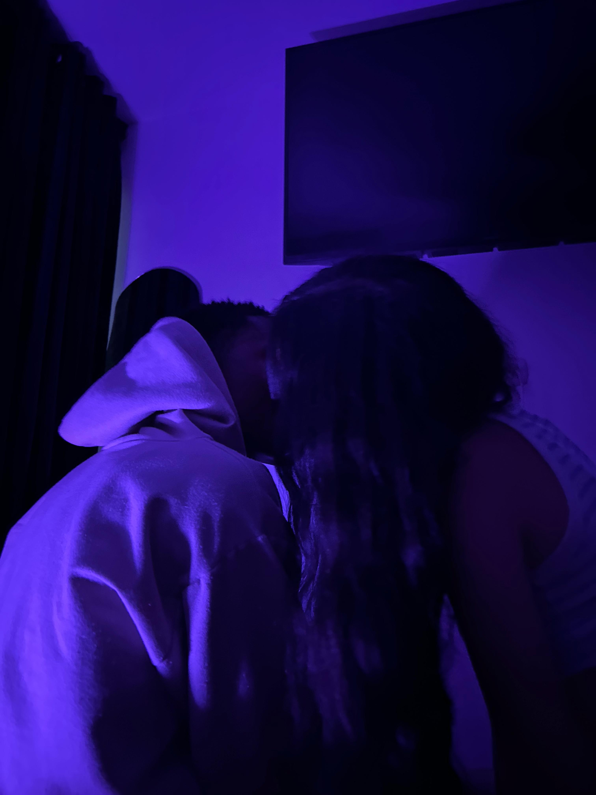
Otra Más
....
Otro video juntos
El dia de tus cumpleaños.
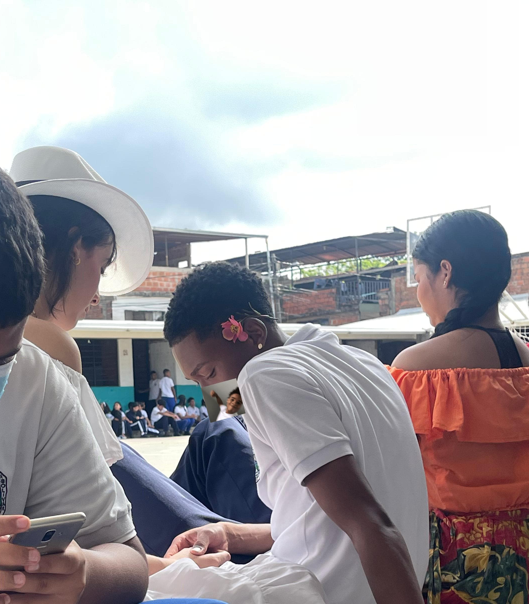
otra fotoo
Otra foto distraidos...